Galapagos Islands
A place, everybody knows and dreams of to see... We did too. However realizing this dream is quite expensive, therefore we were thinking about it for a long time whether we should do it now. Considering that we had no real Christmas gifts, we thought this would be a good way to make up for it, so we did it. It also has to be added that we got a pretty good last minute offer... In total we spent 7 days on the Islands, 3 on our own in Puerto Ayora, on Santa Cruz Island and 4 days on a cruise.
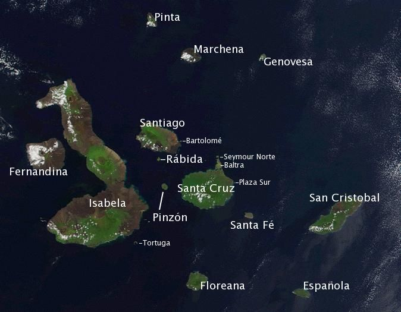
We started our trip from Guayaquil, Ecuador's largest city. All the flights to Galapagos go through Guayaquil, even the ones starting from Quito, the capital. We took an early morning flight at 8, but strangely we had to be at the airport 2 hours before departure, as if it had been a long distance international flight, not a domestic one. It turned out that getting to the Islands is not that easy, but the regulation of entry are almost as strict as to Australia. First you have to get your bags checked with the National Park, so they can disinfect them or something by radiation. Then you have to pay 10 USD as some sort of a tax of entry, and you get a nice plastic INGALA Migration Card. Only after all this may you check in.
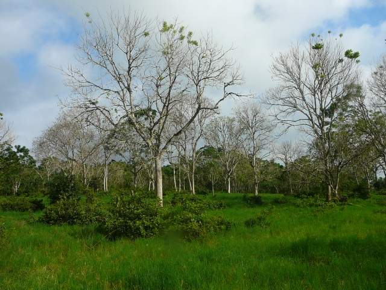
Highlands
on Santa Cruz
So we arrived and lined up for quite a long time at the immigration, even our carry-on-bags where checked again. No idea why it was necessary, because it is still part of Ecuador. Is it simply because otherwise if they only make you pay the 100 USD National Park fee, it might appear that they are not doing anything else but collecting money? Anyhow, the amount of money the NP is collecting must make a little fortune, considering that every day there are two incoming flights to Baltra, each of them flying in ca. 100 tourists. Where does it all go to?! Interestingly at the airport the tourist information did not even speak English...
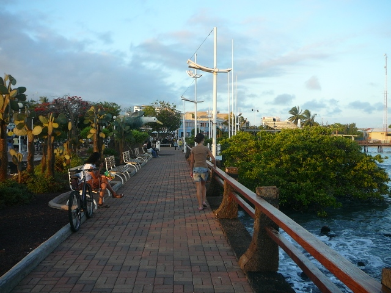
Port
in Puerto Ayora
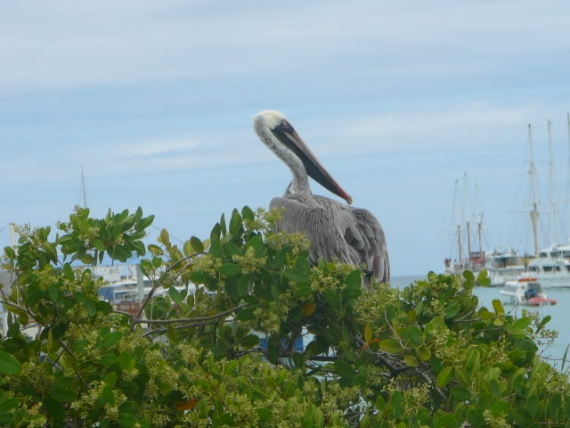
Brown
pelican in the port
Around Puerto Ayora there are quite a few
things one can do on his/her own. The first thing is just to sit
around in the port: one can observe quite a few bird species
(boobies, frigatebirds, pelicans), marine iguanas in and out of the
water, colorful crabs (sally light-footed crabs with red bodies and
blue claws), sea lions hunting and playing among the boats...
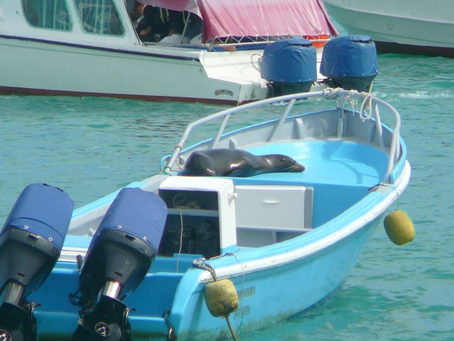
Sea
lion in a boat in the port
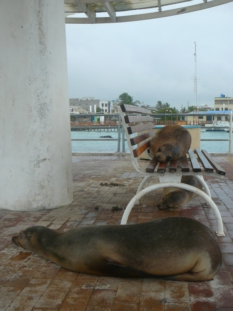Sea
lions in the port 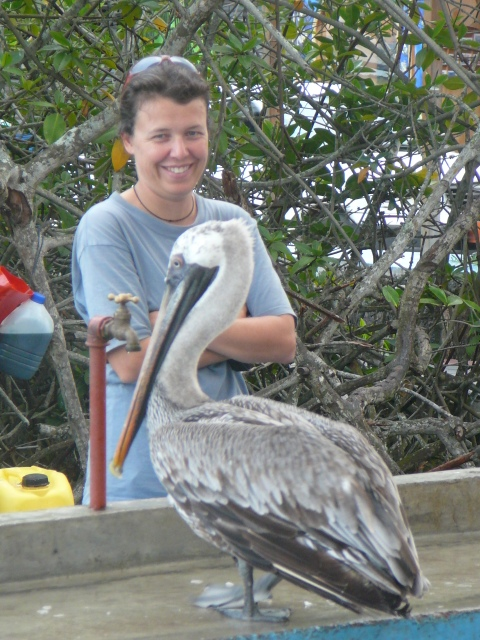
Brown
pelican in Puerto Ayora
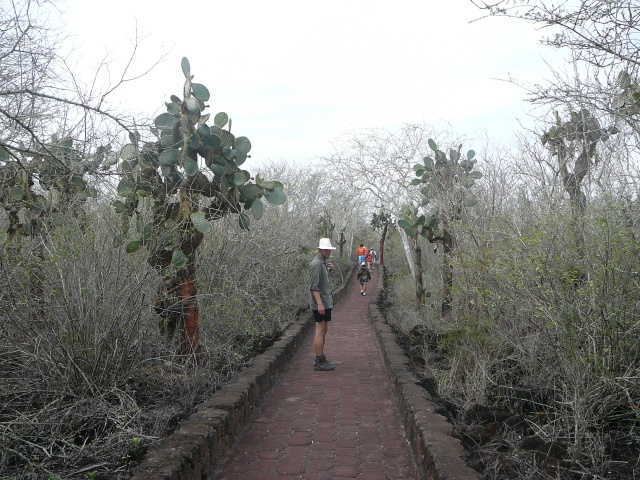
Walkway
to Tortuga Bay
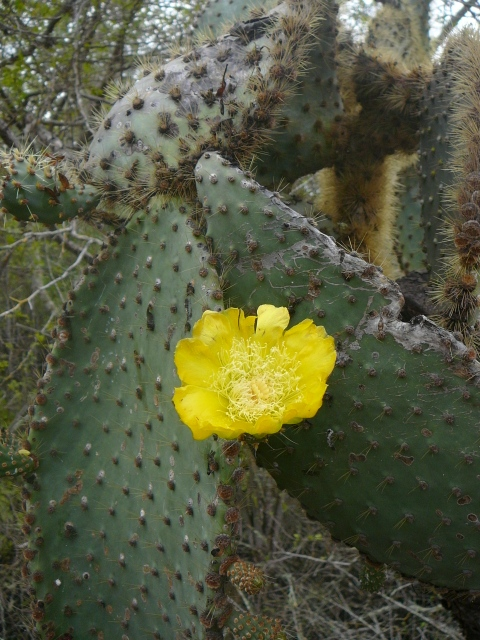 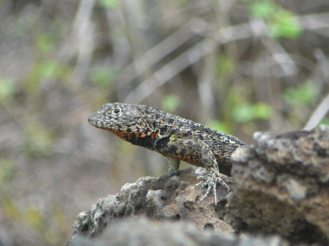
Lava
lizard
Probably the first thing one notices on the beach are the marine iguanas, either their traces or the sunbathing animals themselves.
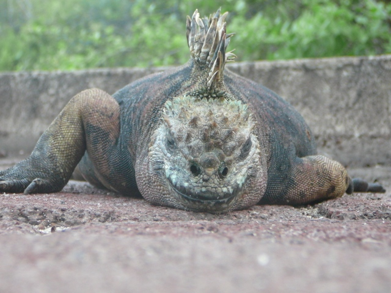
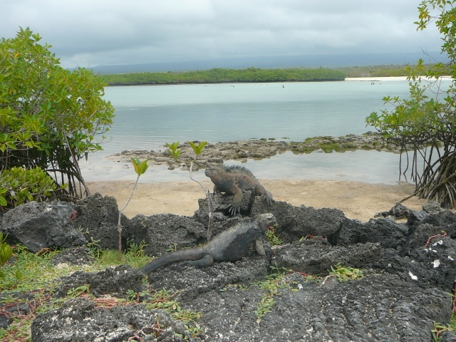
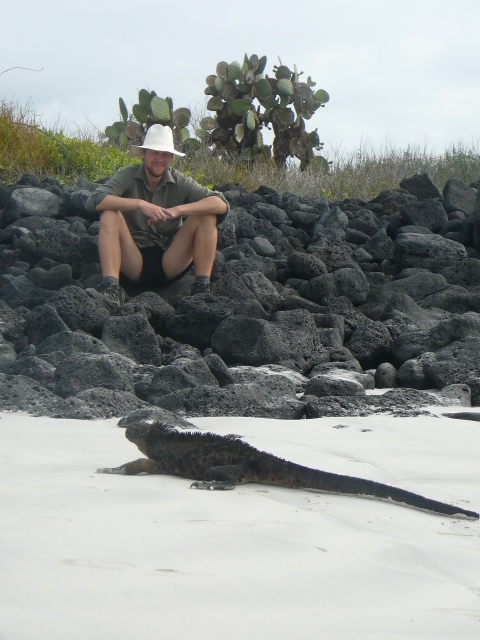
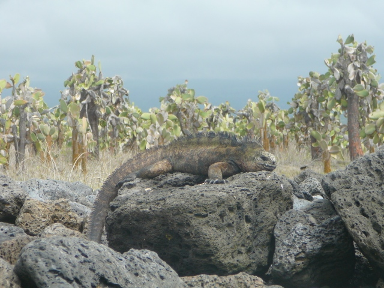
However,
the joy of the first spotting is soon overtaken by the overwhelming
sight of hundreds of these animals laying around in each others close
proximity on the rocky beach a few hundred meters further away. They
are really amazing creatures, with their dragon-like appearance and
large spikes along their spine. As they are not afraid of humans, one
can observe them from very close, as some of the huge males are
threatening each other by vigorous head nodding and even fighting
each other, while the smaller and darker females do not let
themselves be bothered by the show the males put up. Nevertheless,
when one gets really close they start sneezing as a kind of a warning
(normally they do that on a regular basis anyhow, because this is how
they get rid of the salt in their body) and only if one almost steps
on them, do they run away. It might actually happen because the
almost black females are very well camouflaged on the black lava
rocks.
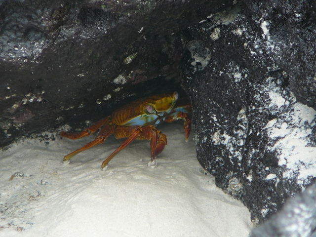 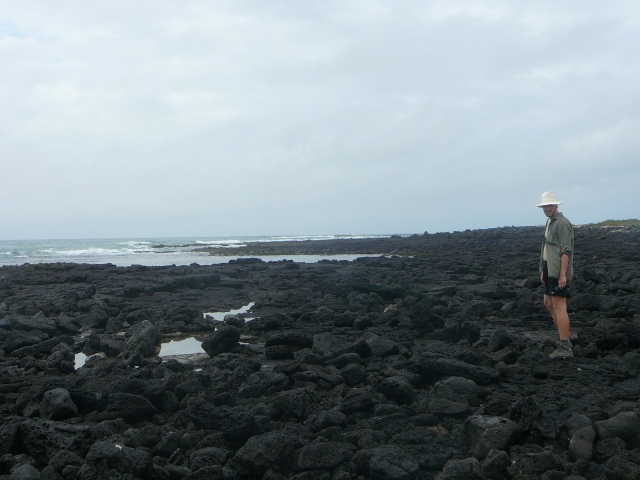 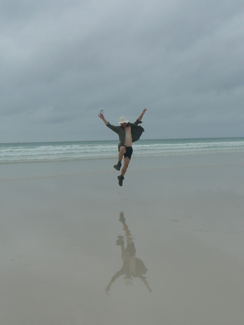
Sally
light-footed crab
Black
lava rock in Turtuga Bay
Reflections
on the beach in Tortuga Bay
Besides the iguanas, the other very interesting thing on that stretch of beach are the very clear reflections on the wet sand. Taking funny pictures here compensates for the lack of swimming possibility (the currents are too dangerous).
Further away in a small bay it is possible to swim, or rather just to cool down in the water, because it is way too shallow for a real swim. But on the shore a few blue-footed boobies, magnificent frigatebirds and a few Darwin finches can be observed.
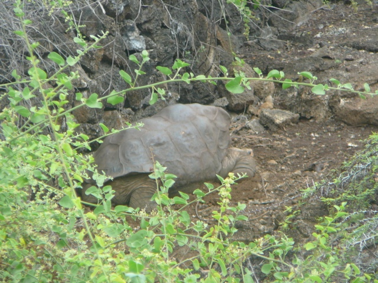
Lonesome
George
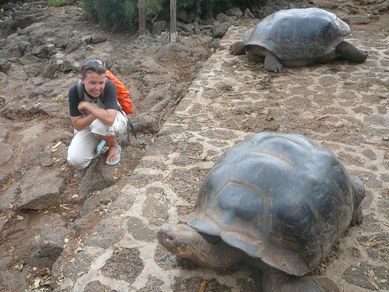
Watching
peaceful giants in the Charles Darwin station
Because no other individual of the same species
exists, the scientists decided to try to pair him with females of an
other closely relates species, which lives on a neighboring island.
However, so far they could not produce viable offspring. It is an
other question whether such breeding program really makes sense,
because the result would only be an artificial hybrid and whether
further severe inbreeding is really healthy??? The research station
has a breeding program for land iguanas as well, but one can only see
3 or 4 of these animals in different enclosures. They give a strange
impression with their yellow colors.
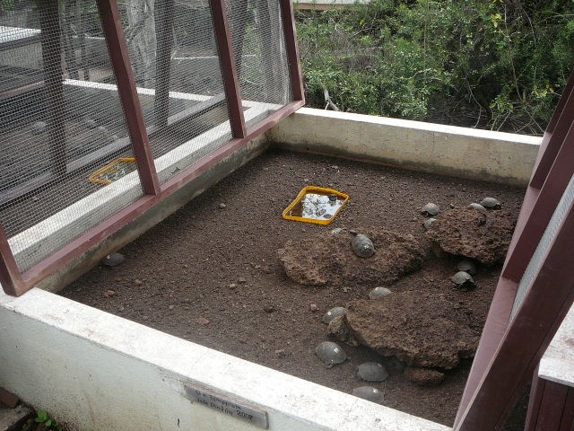
Tortoise
nursery
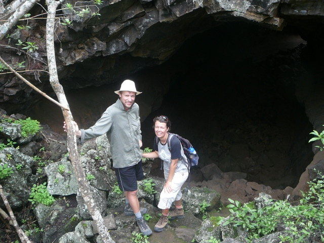
At
a lava tunel
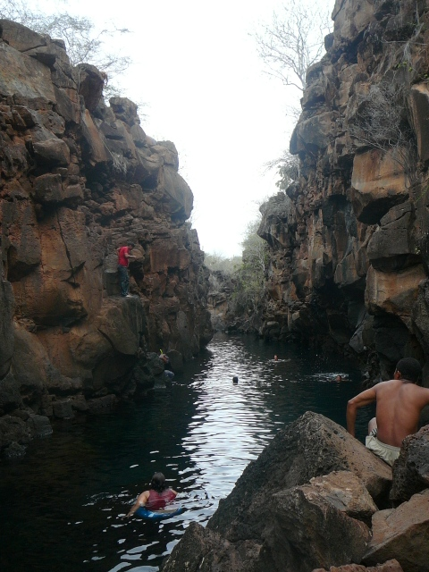
Volcanic
gorge
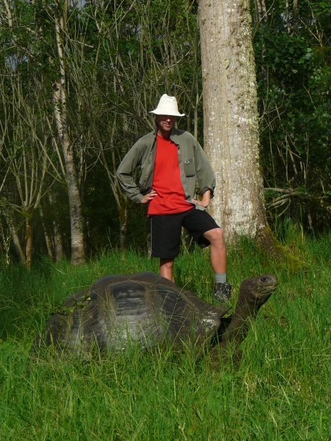Giant
tortoise on a farm in the Highlands of Santa Cruz
Our tour covered a relatively short sailing around the Rabida, Bartolome, Santiago and Santa Cruz Islands. We started with a bus trip to the Highlands of Santa Cruz, which is basically the center area. It is the main farming area on Galapagos, where one sees many cows grazing. The main attraction here is the giant tortoises which are grazing along the cows. The farmers have to build their fences in a way that the tortoises can cross underneath them, so their movements would not be limited. We visited such a private farm and could observe many tortoises. It was really fascinating to walk around and spot such a giant creature munching on grass in almost every bush. Surprisingly they were very shy, unlike the other wild animals we have encountered on the island and pulled back their heads into their shells quickly when we approached them and gave a loud hissing sound.
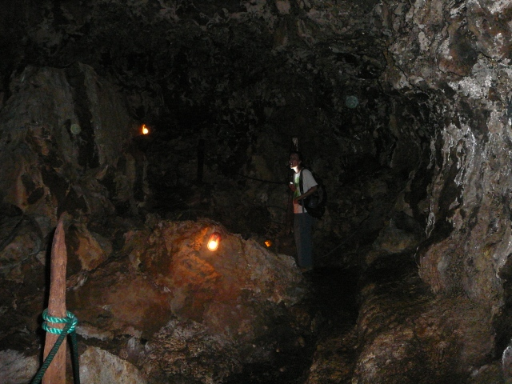
Lava
Tunel
On the same farm there was a large lava tunnel
which is basically a volcanic cave and we could walk through it. We
could also try how claustrophobic the tortoises might feel in their
shells by crawling into the remains of a large tortoise.
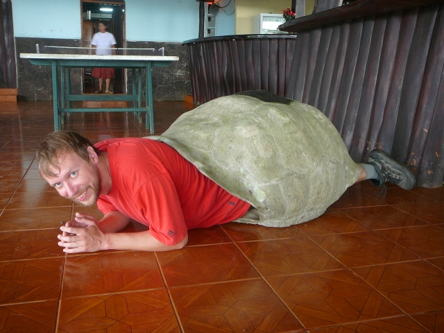
Kaarel
kilpkonn
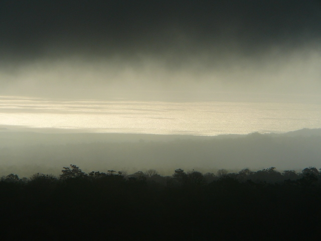
Foggy
view to the sea
After the visit we drove back to Puerto Ayora, got back on the boat and sailed during the night to Rabida Island. It is a very small island, famous for its red sand that has its color from its iron content. Mostly sea lions inhabit the island. They used to occupy only the sandy beaches and flamingos used to wade in a small salty lake close to the beach. However, since the authorities cut a path into the bushes which separate the lake and the beach from each other, the sea lions found a new playground and invaded the lake. The sea lions used these waters as a toilet which stunk to the flamingos (the amount of the algae and crabs the flamingos feed on in the lake decreased), so they abandoned the lake. Here we walked around among the sea lions who did not show interest in us whatsoever and did not move at all when we approached them. The babies however were very curious and approached us so much that we had to move out of their way. They were sooo cute and one would have wanted just to hug them and play with them. But of course this cannot be done, not only because of the rules of the authorities, but also because they would be abandoned by the mother if she can smell the human touch (so were we told). On the shore we found many sea stars that were probably taken out of the sea by the sea lions who like to play with them. Otherwise the island itself was not that interesting, the landscape was similar to the one on the coastal areas of Santa Cruz: many cacti, leafless trees, dry land. There are no large breeding colonies of birds here, either. The water on the other hand was full of colorful fish and it was fun to snorkel.
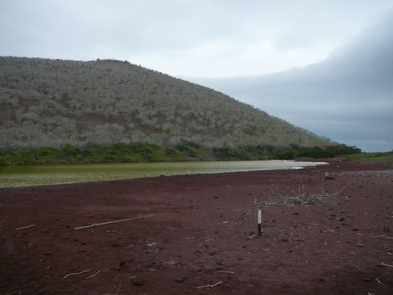 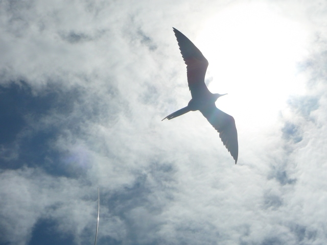
Red
sand beach on Rabida
Magnificent
frigate bird
Our next stop was in Puerto Egas, on the western coast of Santiago Island, that was just a few hours away by boat. Here one may walk along the coast and snorkel on the beach. For people who did not go to Tortuga Bay, this is the first encounter with black lava rocks and marine iguanas and the colorful crabs. We saw a few fishing birds and sea lions as well. Because of the presence of the latter, snorkeling was a bit stressful, because there was a huge dominant male on the beach. An encounter with him in the water may end up quite nasty and it would not be him who would get hurt.
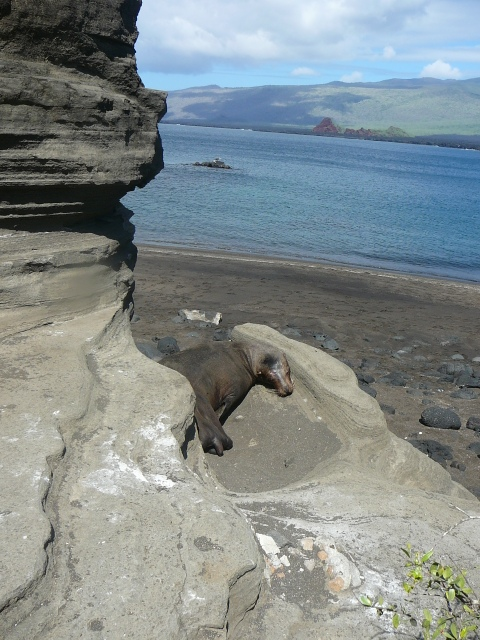 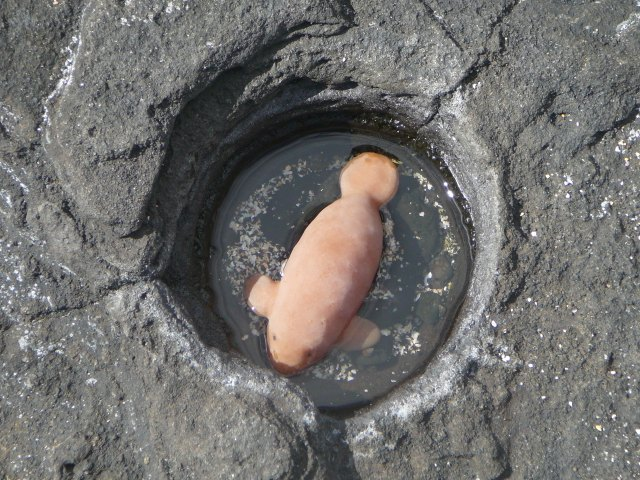 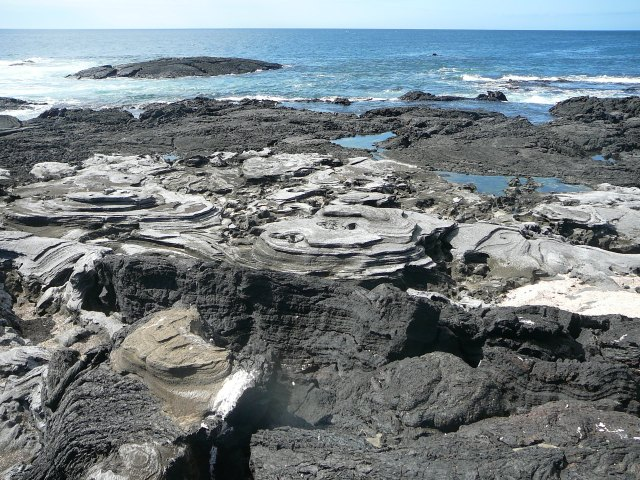
Sea
lion at Puerto Egas
Galapagos
manatee or introduced species?
Black
lava at Puerto Egas
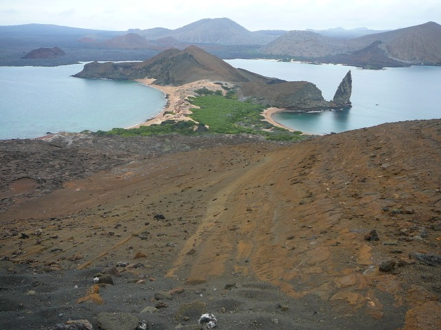 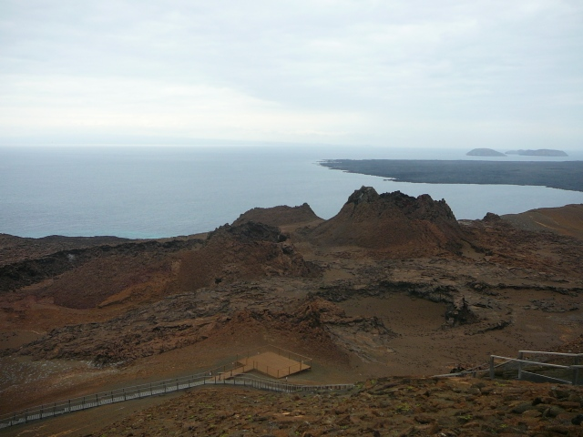
Bartolome
with the pinnacle rock
Secondary
cone on Bartolome
On the third day we reached Bartolome Island,
located at the eastern side of Santiago Island. This is the place
where most of the postcard pictures are taken of its two bays and the
pinnacle rock. The island is really small and the tourists may walk
on prepared boardwalks only. It consist of a cone of an extinct
volcano and many secondary craters, through which gas and lava
erupted many many years ago. Hardly anything grows here other than a
few lava cacti, but the rocks have many colors, ranging from red to
yellow.
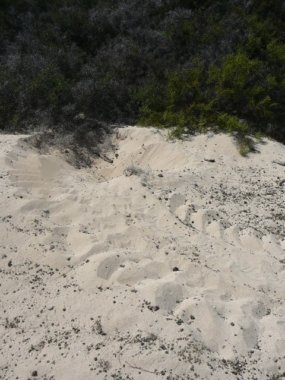
Turtle
nest, Sullivan Bay
The sandy area was quite small though, because after a recent eruption a lot of black lava covered up the coast. It left very weird formations behind and it was quite fun to walk on it and look for interesting shapes. This lava field was created after an eruption 125 years ago, so Darwin, who was exactly in this Bay some 180 years ago, saw a completely different landscape.
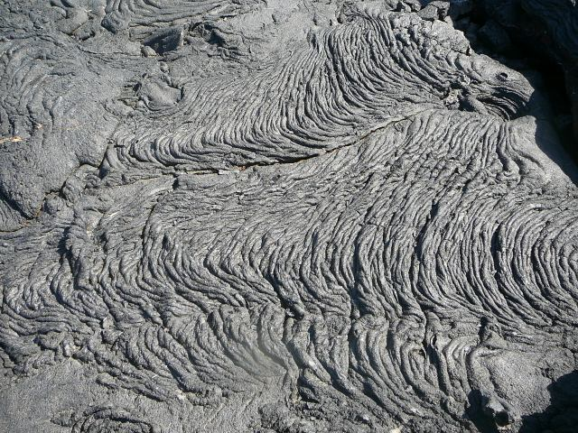 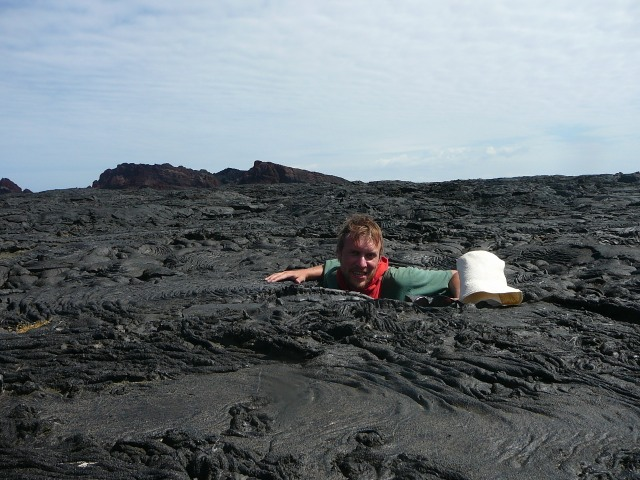
Lava
formation in Sullivan Bay
Swallowed
by the lava, Sullivan Bay
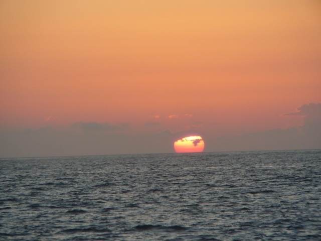 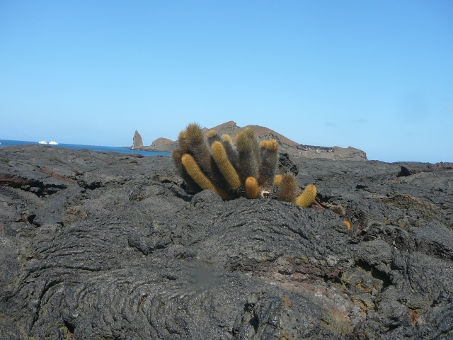
Sunset
on the sea
Illustration
1: Lava Cactus in Sullivan Bay with Bartolome in the background
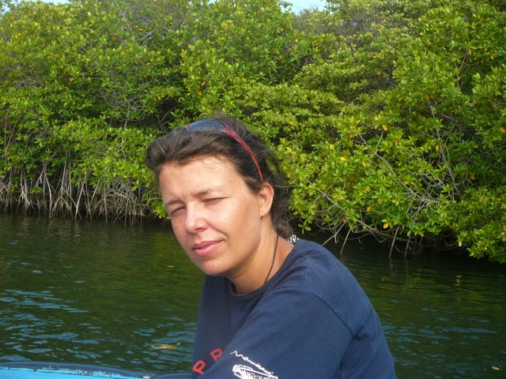
Mangrove
in Black Turtle Cove
On our last day we visited the Black Turtle
Cove, on the northern part of Santa Cruz Island, close to the
airport. It is covered with mangrove that provides an ideal spot for
sea turtles to mate and for shark and ray babies to grow up. So what
we saw was mating sea turtles and shark and ray babies swimming
around. This was a very memorable ending of our tour. A few hours
later we were sitting on the plane back to Guayaquil...
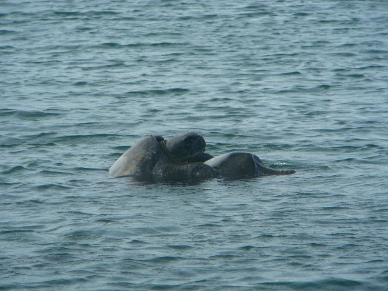
Mating
black turtles in Black Turtle Cove
To sum up, we had a great time on the Galapagos Islands. We encountered the unique wildlife, had a lot of surprises and amazing experiences, particularly during snorkeling. We chose a boat trip that covered a relatively small area and was, most of all about snorkeling. I think it was a great choice in January, because most of the large bird colonies that I would have wanted to see are deserted in this season e.g. that of the albatrosses and are located on the further Islands.
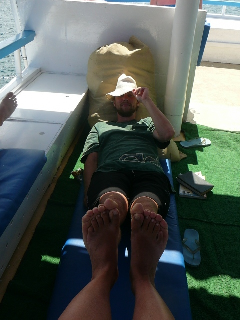
Relaxing
on the boat